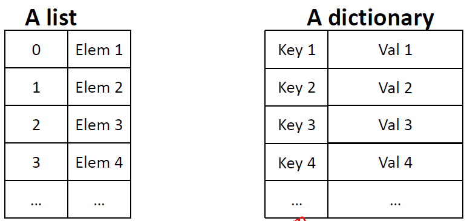

Informationen über Schülernoten könnte man in zwei Listen abspeichern. Für Änderungen müssten beide Listen gepflegt werden. In Listen ist der Index immer ein int-Wert.
namen = ['Thorben', 'Soeren', 'Maike']
noten = [1, 3, 2]
def gibNote(s):
k = namen.index(s)
return noten[k]
>>> gibNote('Maike')
2
Mit Dictionaries kann der Index auch ein anderer Datentyp sein. Wir benötigen dann keine zwei Listen mehr, sondern nur noch eine Datenstruktur.
Ein Dictionary speichert key-value Paare.
>>> noten = {} # leeres dictionary
>>> noten = {'Thorben':2, 'Soeren':3, 'Maike':2}
>>> noten
{'Maike': 2, 'Thorben': 2, 'Soeren': 3}
>>> noten['Maike'] # lookup mit key als Index
2
>>> noten.get('Maike') # lookup mit get
2
>>> noten['Lena'] # Fehler wenn key nicht vorhanden
Traceback (most recent call last):
File "", line 1, in
noten['Lena']
KeyError: 'Lena'
>>> noten.get('Lena') # kein Rückgabewert, kein Fehler wenn key nicht vorhanden #
>>> noten['Lena'] = 1 # Eintrag hinzufügen
>>> noten
{'Maike': 2, 'Thorben': 2, 'Soeren': 3, 'Lena': 1}
>>> 'Meike' in noten # key vorhanden?
False
>>> 'Maike' in noten
True
>>> del(noten['Soeren']) # Eintrag löschen
>>> noten
{'Maike': 2, 'Thorben': 2, 'Lena': 1}
>>> noten.keys() # die Menge aller keys
dict_keys(['Maike', 'Thorben', 'Lena'])
>>> for x in noten.keys(): # ist iterierbar
print(x)
Maike
Thorben
Lena
>>> list(noten.keys()) # und kann in Liste verwandelt werden
['Maike', 'Thorben', 'Lena']
>>> noten.values() # auch die Menge aller Werte
dict_values([2, 2, 1]) # ist iterierbar und kann in
>>> list(noten.values()) # Liste verwandelt werden
[2, 2, 1]
>>> for k in noten.items(): # items gibt key-value-Tupel zurück
print(k)
('Thorben', 2)
('Maike', 2)
('Lena', 1)
m = {0.3: 'A'}
>>> 0.3 in m
True
>>> 0.1+0.1+0.1 in m
False
>>> 0.1+0.1+0.1
0.30000000000000004
>>>
def zeichenZaehlen(s):
'''
s: String
returns: dictionary, das zu jedem in s vorkommenden Zeichen angibt,
wie oft es vorkommt
'''
tmp = {}
for c in s:
if c in tmp:
tmp[c]+=1
else:
tmp[c] = 1
return tmp
>>> zz = zeichenZaehlen('abaa')
>>> zz
{'a': 3, 'b': 1}
>>>
>>> s = set()
>>> s
set()
>>> s = {5,3,2,3,9}
>>> s
{9, 2, 3, 5}
>>> s.add(4)
>>> s
{2, 3, 4, 5, 9}
>>> s.remove(5)
>>> s
{2, 3, 4, 9}
>>> 2 in s # lookup
True
>>> 10 not in s
True
>>>
Mengenoperationen:
>>> s = {1,2,3}
>>> t = {2,3,4}
>>> s | t # Vereinigung
{1, 2, 3, 4}
>>> s & t # Schnitt
{2, 3}
>>> s - t # Differenz
{1}
>>> s ^ t # Entweder-Oder
{1, 4}
>>>
Iterierbare Datentypen können wir mit einer for-Schleife durchlaufen
s = 'abc'
for x in s: # <class 'str'>
print(x)
a = [1,3,3] # <class 'list'>
for x in a:
print(x)
b = (7,8,8) # <class 'tuple'>
for x in b:
print(x)
r = range(3) # <class 'range'>
for x in r:
print(x)
m = {5,7} # <class 'set'>
for x in m:
print(x)
d = {'a':1, 'b':2} # <class 'dict'>
for x in d: # x läuft durch die keys
print(x)
for x in d.keys(): # <class 'dict_keys'>
print(x)
for x in d.values(): # <class 'dict_values'>
print(x)
for x in d.items(): # <class 'dict_items'>
print(x)
list(y), tuple(y) wandelt jeden dieser Datentypen in eine Liste bzw. Tupel um. Alle diese Datentypen haben eine Länge len(y). Auf Elemente von str, list, tuple, range kann mit einem Index zugegriffen werden. list, set, dict sind mutable. Seiteneffekte können auftreten. Mit deepcopy können tiefe Kopien erstellt werden.